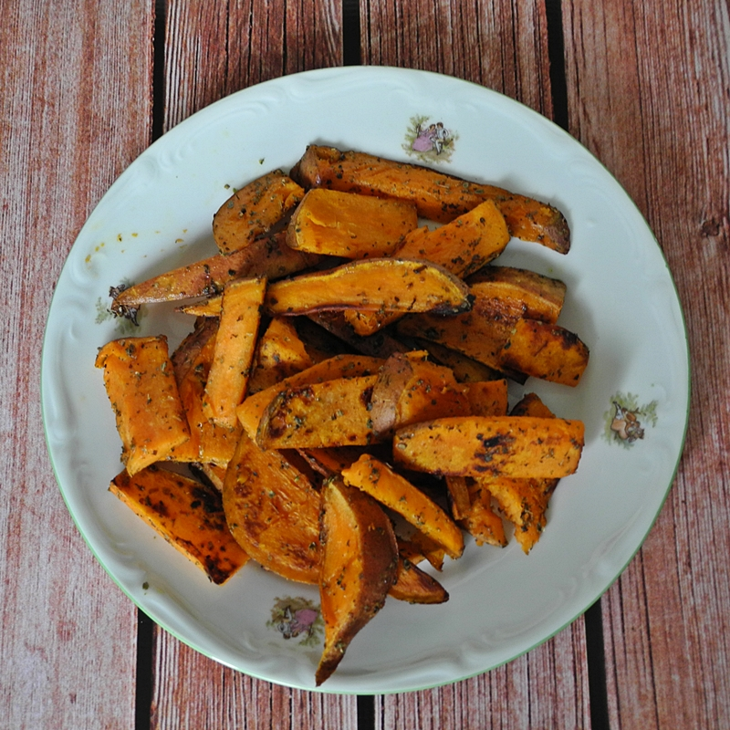

Zapiekane bataty
Ostatnio będąc na zakupach skusiłam się na batata - już od jakiegoś czasu chciałam spróbować jak smakują "słodkie ziemniaki". Jakie było moje zdziwienie, gdy odkryłam znajomy kolor, konsystencję, a nawet bardzo podobny smak! Dla mnie batat bardzo przypomina w smaku pieczoną dynię piżmową, aczkolwiek przy dyni jednak pozostanę, która jest jeszcze łatwiejsza w przygotowaniu...
Składniki (na solidne 2 porcje):
- 1 duży batat
- 2-4 łyżki oleju rzepakowego
- przyprawy: sól morska, majeranek, mielona gałka muszkatołowa, pieprz cayenne
Przygotowanie:
Batata dokładnie myjemy i nieobranego ze skóry kroimy na małe części (podobne jak na zdjęciach - kawałki nie mogą być zbyt grube). Do krojenia tego warzywa potrzeba trochę krzepy (przynajmniej do jego przepołowienia), więc na pewno przyda się solidna męska ręka... :) Tak przygotowanego "ziemniaka" gotujemy na parze przez 5-10 minut (części mają lekko zmięknąć, ale nie rozpadać się).
Ugotowanego batata przekładamy na rozgrzaną patelnię z powłoką zapobiegającą przywieraniu (lub wkładamy do żaroodpornego naczynia, by zapiec w piekarniku w około 200ºC - sposób przygotowania już wg uznania), delikatnie skrapiamy olejem oraz przyprawiamy do smaku: majerankiem, gałką muszkatołową, niewielką ilością soli oraz pieprzem cayenne. Podsmażamy na patelni do zrumienienia - im bardziej przypieczone, ale oczywiście nie przypalone ;-), tym lepiej smakują...
Polecam spróbować obie wersje - i bataty i dynię piżmową. Pamiętajcie również, by koniecznie dać znać w komentarzach czy i dla Was te warzywa są tak podobne w smaku...